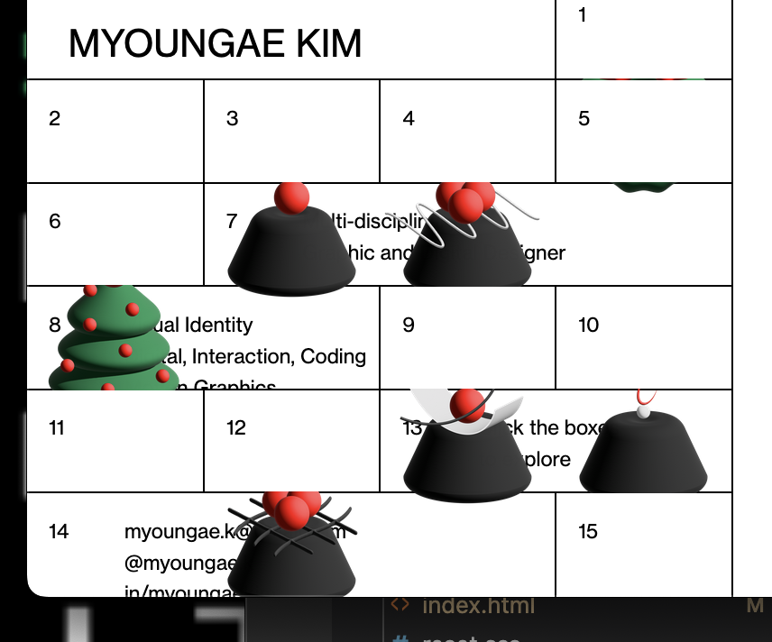

Week 2 questions
1) What was the first thing you paid attention to when interacting with the experience?
My attention immediately went to the h2 on the middle of the page. The layout is messy with an unclear hierarchy, so my eyes went all over the website without knowing what to focus on next.
2) Spend two minutes with the experience and create a list of each of your discrete actions.
- The first thing I did was move my mouse around the page to see if anything would change if I hovered over it.
- I then scrolled down the page to see if there was anything more than videos and if there was some information in the footer of the page.
- The videos were going very fast and it was tiring to look at so I avoided watching them. - I started inspecting the sidebar, there were no color changes or other communication to show they were interactive
- The layout reminded me of an advent calendar so tried clicking on the boxes to see if they'd open or change in some other way
- After the first box opened I clicked on every box to see which ones opened. Some of the boxes had Christmas themed objects in them. When hovering over them they'd shake and my mouse would change into a hand.
- I then grabbed the objects, dragged them around the page and stacked them on top of each other
3) What part of the experience did you spend the most time engaging with?
The calendar and the “gifts” inside. It was fun to get surprises and I didn't expect to be able to take the gifts out of the box and move them to every part of the page.
4) What was the most common action in your two minute interaction with the experience?
Out of all my actions, I clicked the most. I went back to clicking the calendar after moving the gifts to see if anything changed and then on other parts of the page to see if there were any other hidden gifts there too.
5) What is your impression of the intended primary goal of the interactive experience?
To show the website creator's skills and abilities through their previous projects. It brings special attention to the creator's technical skill of gamification elements on websites as well as their creativity in their design. The end goal is that this website will interest potential clients and give the creator new contract work.
6) How does the interactive experience communicate this primary goal?
- By showing the website's function in a video on the right and having an attractive design.
- The sidebar looking like an advent calendar gets the users' attention without any animation and other “loud” communications.
- The other videos and photos from their previous projects also show their skills in other areas and that they can fulfill the work they sign on to. Potential clients will get a better sense of their abilities and believe it's likely they can trust them as a contractor.
7) What is your impression of how the experience should be interacted with over time? (For how long and how many different times)
By exploring the whole page and getting the user more engaged while giving them first-hand experience with the creator's skill. This can leave a better and longer lasting impression than just looking at videos and reading about it. I personally refreshed the site to see if anything would be different, like the gifts being hidden elsewhere. I think only a minute is needed to get familiar with the site and test it out before looking more thoroughly at the other websites in the creator's folio. While there are problems with layout, hierarchy and too much going on at once – they have made a good choice with grabbing users' attention with something fun. I also believe they would want to return to the site or show it to someone else.
8) How does the interactive experience communicate how it should be interacted with over time?
Once you've opened the first box with a gift you get told by a shaking motion and different mouse that there's more to do. Since the first video shows the current website, once users are done playing around with the sidebar their attention goes to the videos. The “game” makes the users more interested in other works by the creator. They are more likely to check them out and pay more attention than if the sidebar was nothing but a regular navigation menu.
Week 3 questions
9) What other media forms (digital or otherwise) does the experience reference?
The sidebar design references to advent calendars with the layout, “opening” effect and the hidden presents. For those that didn’t grow up with the calendars, it can remind them of school lockers. The design is familiar enough for users to inspect the sidebar and check if the boxes can be opened.
10) What does this reference/s communicate to you about how you should act when engaging with your research experience?
The calendar sidebar encourages users to actively interact with the site instead of passively scroll down and watch the slideshows. Since there aren't presents behind every box, users will be more likely to keep opening every box. They get to experience what the creator can do and will be more interested in the other works in the folio. Possibly with a more positive and openminded outlook than before they interacted with the calendar.
11) What does this reference/s communicate to you about how you should feel when engaging with your research experience?
The calendar is almost like a mini game, this gets the users more excited and engaged. As mentioned in the previous question, the user can quickly go from indifference to a much more positive attitude. I believe the users will be more interested and pay much more attention to the other works in the creator's folio.
12) What is the most frustrating part of the interaction to you and what makes that part frustrating?
Lack of proper hierarchy and too much movement that doesn't stop. There's too much small text and too little distinction between the headings. If the text were bigger it would be more comfortable to read and be more accessible to those with weakened sight. Besides the videos themselves, the website design is doing a poor job of distinguishing it's different parts. It makes it difficult to see what belongs together. While the advent calendar is a fun feature I don't think it should be in the sidebar. Their contact info is hidden in the sidebar with how little it stands out.
13) What is the most satisfying part of the interaction to you and what makes that part satisfying?
The most satisfying part for me was that there were actual objects behind the doors that I could grab and move around. I didn't expect to move it around much, but I could drag it to every part of the page.
Additional comments
I noticed after shortening the length of my browser that the hidden gifts in the advent calendar will suddenly peak out (shown in the picture below). I don't have the knowledge and skills to suggest how this coudl be fixed, but it would be in the creator's best interest to fix it as it can hurt their impression on potential clients.
As for the rest of their page I would suggest changing the layout to be less messy and have too much going on at once. The advent calendar is a good idea and does a great job of getting the users engaged. I think changing the sidebar into a header would be better as it wouldn't be so up and close with the slideshows. This would also allow the slideshows to be bigger now that theres more horizontal space. The creator should also make the text larger for readability and make a proper hierarchy where headers are more prominent.